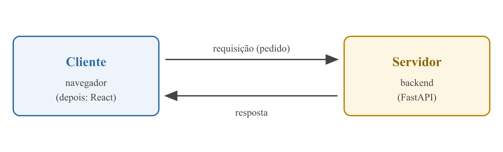
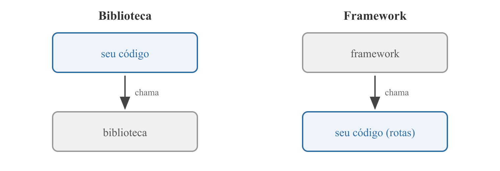
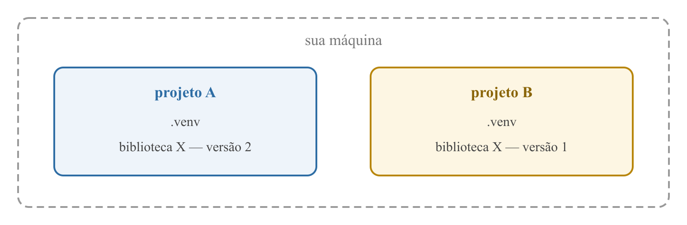

Início do projeto
e frameworks
Programação Avançada — Aula 01
Universidade Unirios
Vamos construir um Reading Tracker
Um sistema web para acompanhar suas leituras:
- Cada pessoa cadastra seus Books (com o total de páginas) e envia a Cover;
- Registra Reading Updates: "estou na página 120";
- O sistema calcula a porcentagem de leitura de cada Book;
- Login, área administrativa e relatório em PDF.
Toda aula evolui o mesmo projeto
- Nada de exemplos soltos: o código de hoje é a fundação do código da última aula;
- A teoria aparece na hora em que a prática precisa dela;
- Ao final do semestre: um sistema completo, construído por vocês.
Hoje: a fundação
- T-2 Onde o código roda — o modelo cliente-servidor;
- T-1 Com que ferramenta — o que é um framework;
- T-6 Como instalar direito — dependências e ambientes virtuais.
E, antes de ir embora: nossa primeira rota FastAPI rodando.
Um site são dois programas conversando

KUROSE; ROSS. Computer Networking: A Top-Down Approach, 2021 · TANENBAUM; VAN STEEN. Distributed Systems, 2023
O cliente pede; o servidor responde
— nunca o contrário
- O servidor não sabe quem vai chamar nem quando;
- Ele fica esperando requisições chegarem;
- Cada resposta só existe porque houve um pedido.
Quando o feed do Instagram "atualiza sozinho"… quem pediu?
A conversa tem um idioma: HTTP
- Request (pedido) e response (resposta) têm formato definido;
- Todo navegador e todo servidor web falam esse idioma;
- Na aula 02 vamos dissecar essa conversa por dentro.
KUROSE; ROSS. Computer Networking: A Top-Down Approach, 2021
É como um restaurante
- A mesa (cliente) faz o pedido;
- O garçom (HTTP) leva o pedido à cozinha e traz o prato;
- A cozinha (servidor) prepara e devolve;
- A mesa nunca entra na cozinha.
Recapitulando — cliente-servidor
- Dois programas pela rede: o cliente pede, o servidor responde;
- No Reading Tracker: navegador/React é o cliente, FastAPI é o servidor;
- O idioma da conversa é o HTTP;
- O servidor vive esperando — nunca toma a iniciativa.
Ninguém fala HTTP "na unha"
Receber uma requisição sem ajuda significa:
- Ler bytes crus de um socket de rede;
- Interpretar o protocolo HTTP manualmente;
- Montar a resposta byte a byte.
Ninguém escreve isso a cada projeto — alguém já escreveu por nós.
Biblioteca: você chama.
Framework: ele te chama.

JOHNSON; FOOTE. Designing Reusable Classes, 1988 · FOWLER. Inversion of Control Containers, 2004
Inversão de controle
O "princípio de Hollywood":
"Não nos ligue — nós ligamos para você."
- Você preenche as lacunas: a rota, a regra de negócio;
- O framework cuida do fluxo: quando e como seu código roda;
- Quem controla o
main() do nosso programa? Ele.
FOWLER. Inversion of Control Containers and the Dependency Injection pattern, 2004
FastAPI é o nosso framework web
A cada requisição, ele:
- Recebe e interpreta o HTTP;
- Descobre qual função sua deve responder;
- Converte o retorno dela em JSON.
Nós só declaramos funções — ele decide quando chamá-las.
Documentação oficial do FastAPI — fastapi.tiangolo.com
Frameworks trazem decisões prontas
O lado bom
- Produtividade;
- Segurança que você não precisou escrever.
O preço
- Menos liberdade;
- As decisões deles viram as suas.
Essa troca vale quase sempre.
Recapitulando — frameworks
- Biblioteca: seu código chama o dela;
- Framework: o código dele chama o seu — inversão de controle;
- FastAPI cuida do HTTP; nós escrevemos as rotas;
- Decisões prontas: menos liberdade, muito mais produtividade.
FastAPI não vem com o Python
- É uma biblioteca de terceiros: alguém escreveu e publicou;
- Vive no PyPI — o repositório público de pacotes Python;
- O
pip baixa e instala de lá.
Cada projeto tem sua caixa de ferramentas

O ambiente virtual (venv) isola as dependências de cada projeto — versões diferentes convivem na mesma máquina.
requirements.txt é a lista de compras
- Registra o que o projeto precisa e em qual versão;
- Qualquer pessoa (ou servidor) reproduz o ambiente com um comando;
- Sem ele, o projeto "só roda na minha máquina".
HUNT; THOMAS. The Pragmatic Programmer, 2019
Versões têm significado
MAJOR.MINOR.PATCH
- MAJOR — mudanças que quebram quem usa;
- MINOR — funcionalidade nova, sem quebrar;
- PATCH — correções.
PRESTON-WERNER. Semantic Versioning 2.0.0 — semver.org
Recapitulando — dependências
- FastAPI vem do PyPI, via
pip;
- O venv é a caixa de ferramentas isolada de cada projeto;
requirements.txt torna o ambiente reproduzível;- Versões seguem o semver: MAJOR.MINOR.PATCH.
Mãos ao código
Do zero à primeira rota, em 6 passos.
Passo 1 — o ambiente virtual
Mac
mkdir -p projeto/backend
cd projeto/backend
python3 -m venv .venv
source .venv/bin/activate
Windows (PowerShell)
mkdir projeto\backend
cd projeto\backend
python -m venv .venv
.venv\Scripts\Activate.ps1
O (.venv) no prompt é o sinal de que a caixa de ferramentas está aberta.
Windows bloqueou a ativação? Rode uma vez: Set-ExecutionPolicy -ExecutionPolicy RemoteSigned -Scope CurrentUser e abra o PowerShell de novo.
Passo 2 — instalar o framework e o servidor
pip install fastapi uvicorn
- fastapi — o framework;
- uvicorn — o servidor web que o executa (a distinção fica clara na aula 02).
Passo 3 — registrar as dependências
pip freeze > requirements.txt
- O arquivo lista o que instalamos e o que veio junto;
- Um colega reproduz tudo com
pip install -r requirements.txt.
Passo 4 — a primeira rota
projeto/backend/main.py
from fastapi import FastAPI
app = FastAPI()
@app.get("/")
def read_root():
return {"message": "Welcome to the Reading Tracker API"}
- O decorator
@app.get("/") diz ao framework: "GET na raiz? Chame esta função";
- O dicionário Python vira JSON sozinho — trabalho do framework.
Passo 5 — subir o servidor
uvicorn main:app --reload
main é o arquivo; app é a variável dentro dele;--reload reinicia a cada mudança no código — só para desenvolvimento.
Passo 6 — versionar o início do projeto
projeto/backend/.gitignore
.venv/
__pycache__/
- O
.venv é enorme e reconstruível — nunca vai para o repositório;
- O que se versiona é o
requirements.txt;
- O
README.md do projeto nasce hoje: como rodar o que existe.
Funcionou?
- Navegador em
http://127.0.0.1:8000 mostra:
{"message": "Welcome to the Reading Tracker API"}
- Mude o texto, salve, recarregue — o
--reload em ação;
- Espie
http://127.0.0.1:8000/docs: o framework documentou nossa API sozinho. Semana que vem exploramos.
Exercício — suas primeiras rotas
- Crie
GET /status respondendo {"status": "ok"};
- Crie
GET /about respondendo um JSON com project e author (seu nome);
- Teste as duas no navegador.
Dica: se aparecer ModuleNotFoundError: fastapi, confira se o venv está ativo.
O que levamos de hoje
- Cliente pede, servidor responde;
- O framework cuida do HTTP — nós escrevemos as rotas;
- venv +
requirements.txt = projeto reproduzível em qualquer máquina.
Semana que vem: a viagem da requisição
Hoje digitamos um endereço e apareceu um JSON.
- O que acontece entre uma coisa e outra?
- Como o navegador achou o servidor? (DNS)
- O que exatamente viajou pela rede?
- E qual é o papel real do uvicorn?
Referências
- JOHNSON, R.; FOOTE, B. Designing Reusable Classes. Journal of Object-Oriented Programming, 1988.
- FOWLER, M. Inversion of Control Containers and the Dependency Injection pattern. martinfowler.com, 2004.
- TANENBAUM, A.; VAN STEEN, M. Distributed Systems: Principles and Paradigms. 4ª ed., 2023.
- KUROSE, J.; ROSS, K. Computer Networking: A Top-Down Approach. 8ª ed., Pearson, 2021.
- HUNT, A.; THOMAS, D. The Pragmatic Programmer. 20th Anniversary ed., 2019.
- PRESTON-WERNER, T. Semantic Versioning 2.0.0. semver.org.
- Documentação oficial do FastAPI — fastapi.tiangolo.com.